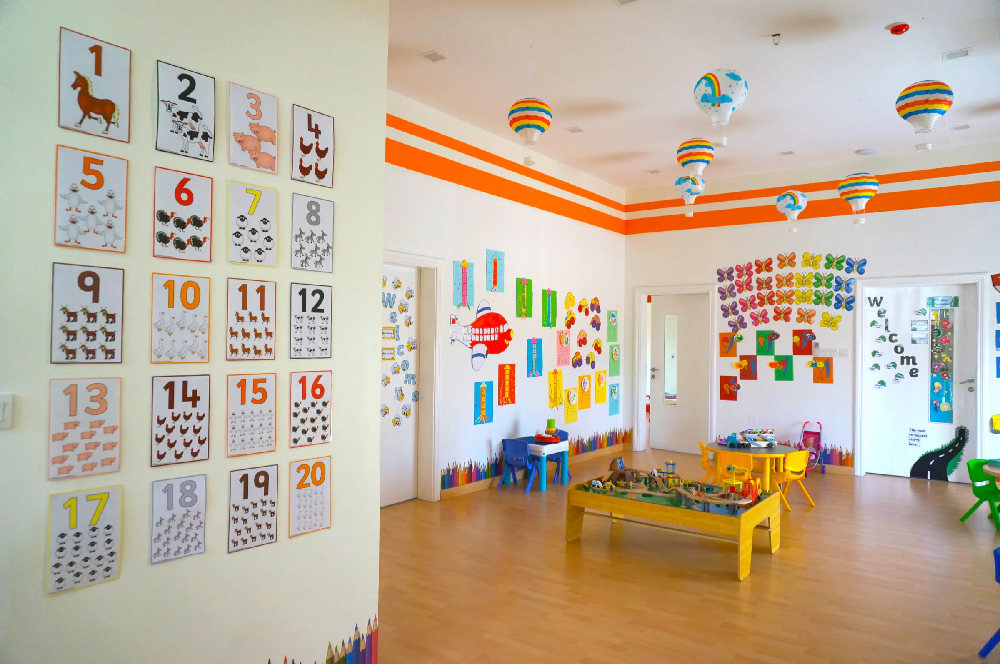
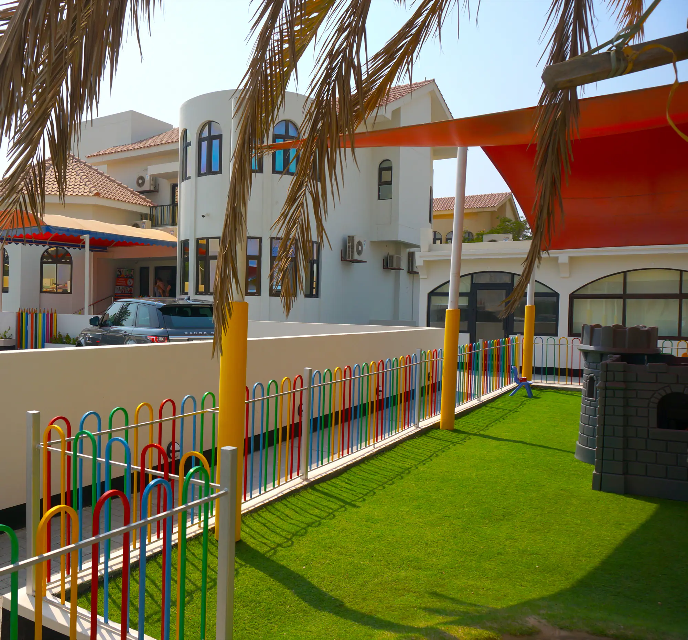
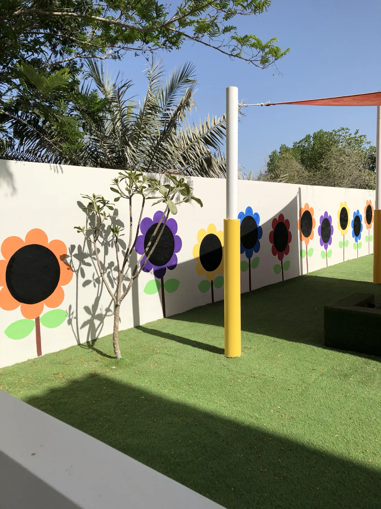
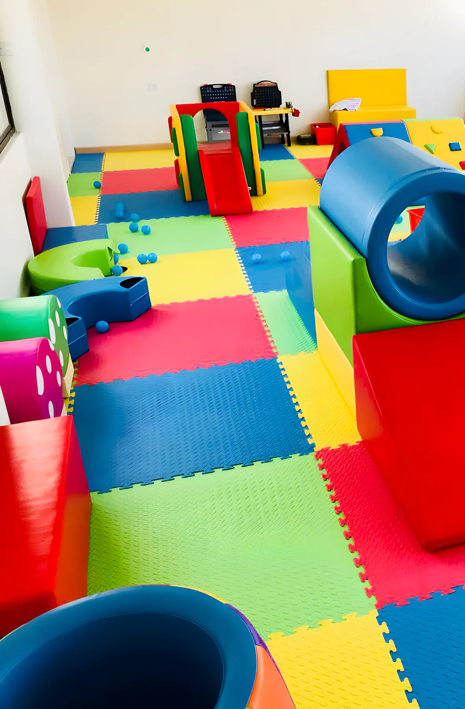
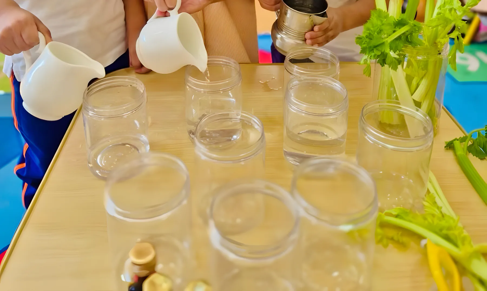
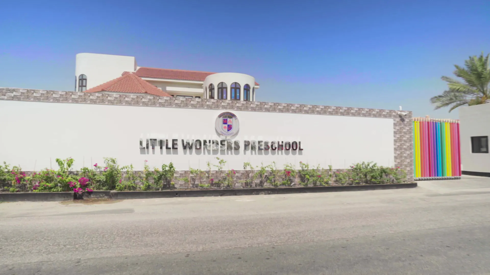

LittleWonders

A bilingual preschool in Saar for children from 9 months to 4 years. British Early Years with Montessori, taught in English and Arabic.
Rolling admission1110 Road 2934, Block 529, Saar, just off Saar Avenue
Mornings, afternoons or the longer day
Three ways to join. The morning and afternoon sessions follow the same curriculum and activities, so you can pick the hours that suit your family.
Morning session
8:00 – 12:00 for infants and pre-nursery, 8:00 – 12:30 for nursery.
Afternoon session
13:00 – 17:00. The same learning as the morning, for families who need a later start.
Morning + Day Care
8:00 – 15:00. Extra meals and snacks, more play time, and more time for your child to make friends and be creative.
Early drop-off is also available. Ask us when you call.
Our classes
Ten classes, grouped by age. Small classes, led by qualified teachers with specialist teachers and assistants.
Which room would your child join?The campus
Just off Saar Avenue, near Saar Mosque. Designed by Little Wonders with international designers to be calm and secure, with bright, spacious classrooms. The classroom and playground equipment was chosen for safety and imported from the United States.
- A large indoor play area with soft play
- Two outdoor play areas
- Large gardens and a planting garden
- A covered sand area
- An indoor bicycle track
- A child-friendly kitchen for weekly cooking sessions
- A sound system in every classroom




British Early Years and Montessori, in English and Arabic
Our curriculum combines the Early Years Foundation Stage (EYFS) with the Montessori approach. Teachers watch each child closely, then plan topics and introduce new materials step by step, so every child learns at their own pace.
- Communication and languageSpeaking, listening and getting ready to write, in two languages
- Sensorial materialsLearning through touch, taste, smell and hearing
- MathematicsSorting, matching, counting, then simple sums and shapes
- LiteracyLinking sounds and letters, beginning to read and write
- Understanding the worldReal-life topics and educational trips
- PhysicalDance, drama and weekly exercise sessions
- Expressive arts and designArt, music, movement, role play
- Everyday livingCaring for the classroom, coordination and balance
5years' teaching experience at least, for every teacher. All are qualified in Montessori and the Early Years Foundation Stage.



Safe, and always in touch
Small classes and a low child-to-teacher ratio, so teachers can watch every child closely. And a campus where safety came first, down to the furniture.
- CCTV in every classroom
- The classrooms and the whole campus are monitored.
- Electronic check-in and check-out
- Every child is signed in and out electronically.
- Secure entry
- A completely secure campus with electronic entry and monitoring.
- A parents' app
- Apps for iPhone and Android to communicate with the preschool.
What parents say
A parent asked the Mums in Bahrain group about Little Wonders. These are some of the answers. Also 4.8 on Google from 90 reviews.
The place is spotless clean I didn’t see this in any nursery and they care about each child as an individual so the child feels so comfortable there!
Teachers are really involved in the children’s development, they have both native Arabic and English speaking teachers working hand in hand … I can see how much my son learned in both languages.
The Montessori curriculum is immersive and encourages learning by doing. They have a separate artroom, playroom and cooking lab outside of the classroom.
Something just felt right about the place; we unanimously agreed on sending our son here and havent been disappointed since enrolling him.
My son goes there for more than a year now and he is so happy there! He made so much progress in every way possible.
My daughter goes to Little Wonders and she loves it … The staff, ambience and facilities are all amazing. Highly recommend.
Questions parents ask
Anything else, call 3644 7000 or 3655 4000, or email info@littlewondersbh.com.
What ages do you accept?
Children from 9 months up to 4 years of age.
What curriculum do you follow?
The British Early Years Foundation Stage (EYFS) together with the Montessori approach, taught in English and Arabic. It was put together by teachers with backgrounds in both.
What are the session times?
Morning 8:00 to 12:00 for infants and pre-nursery, 8:00 to 12:30 for nursery. Afternoon 13:00 to 17:00. Morning + Day Care 8:00 to 15:00. Early drop-off is also available.
Where is the preschool?
1110 Road 2934, Block 529, Saar, just off Saar Avenue near Saar Mosque.
What do I need to register?
Fill in the expression of interest form and we will contact you. At registration we ask for copies of your child's birth certificate, passport and residence visa, immunisation record in English, a passport photo, the registration and medical forms, and the sponsoring parent's passport and residence visa.

Come and see the school
1110 Road 2934,
Block 529, Saar, Bahrain
Just off Saar Avenue, near Saar Mosque.